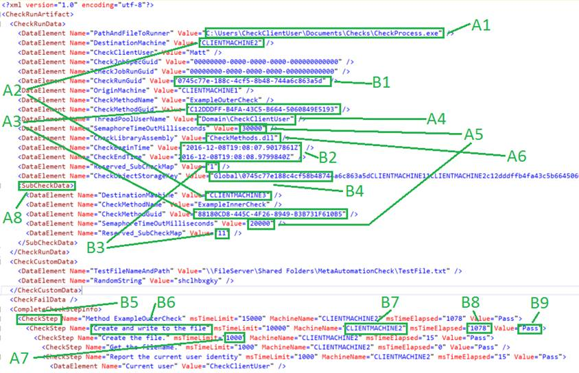

MetaAutomation Sample 3
Installation and Tutorials
Contents
A. Configure Users and Machines
A1. Choose machines or OS instances
A2. Login as the target users on the target machines
A4. Install Windows components
B1. Create the MetaAutomationService event listener on each machine
C1. Use IIS Manager to create the necessary services and thread pools
D. Load and Configure the Solution in Visual Studio
D2. Load MetaAutomation Sample 3 solution
D5. Configure post-build binary copies
D6. Edit the project config files
D7. Create the publish profiles for MetaAutomationService
D9. Deploy MetaAutomationService to all the machines
E. Run Example Check 1 (the default)
E2. Configure the last-run check artifact to drive the next check run
Running the other example checks
Iterative Runs for Test and Debugging
Using the Artifact XML to Drive Checks and Read Results
A. Entries in the XML artifact that drive the check
B. Entries that are determined by the check code and the engine during a check run
The MetaAutomation Sample 3 is a Visual Studio solution developed with Microsoft Visual Studio Community 2017. It contains 9 projects and several folders of important files.
Microsoft Visual Studio Community 2017 is free to download, use and install from https://www.visualstudio.com/downloads/ .
The sample is mostly platform-independent; to run the C# code on another platform that is supported by the Mono project for example, remove the Windows Eventing or port the eventing manually to the other platform, and substitute a different XML-based service for Windows Communication Foundation (WCF).
This document concerns setup and run of the sample as downloaded, including the 6 example checks included in the sample.
MetaAutomation samples 1, 2 and 3 demonstrate
· Self-documenting, hierarchical check steps that show pass, fail, or blocked for each check step
· Timeouts for each check step that are configurable in each check artifact used to run the next one
Both MetaAutomation Sample 2 and MetaAutomation Sample 3 demonstrate checks with
· distribution across processes with synchronization within each check
· running any number of checks in parallel
· pure, compact, descriptive check artifacts in a schema-defined grammar of XML
MetaAutomation Sample 3 also demonstrates the scale potential and cross-machine or cross-tier quality-measurement power of MetaAutomation for e.g. measuring quality for an Internet of Things project, by
· using any number (1-N) of machines and configurable users as defined to run the checks
But, installing and configuring MetaAutomation Sample 3 is much more complex than MetaAutomation Sample 1 or MetaAutomation Sample 2; users and filesystem directories must be installed on each machine, a simple XML-based service must be installed and configured on each target machine, and the build must be configured to place binaries in the correct locations and machines.
Learning to work with MetaAutomation Sample 1 first, and then MetaAutomation Sample 2, is recommended as a prerequisite for MetaAutomation Sample 3, because the earlier samples are much simpler to setup and run and all the concepts introduced with the earlier samples are also present in the later ones. Start with MetaAutomation Sample 1, and the tutorial that comes with it.
For more information and diagrams on how this system works, to customize the checks or adapt the infrastructure, and more on how this implements the Atomic Check pattern and works in the bigger setting of the MetaAutomation pattern language, please see the site http://MetaAutomation.net and the book on MetaAutomation (3rd Edition). In the 3rd Edition of the book on MetaAutomation, A figure in the section on Sample 3 shows how MetaAutomation Sample 3 communicates across multiple tiers.
The setup steps are organized with numbers to represent the sections, and numbers to enumerate the steps. Unless there’s a clear reason not to (e.g., you have Visual Studio installed already, or you are working on a non-Windows platform) it’s easiest to follow the steps in order.
Choose the machines or OS instances you wish to use, including the master machine that will run the primary solution, and target machines to do the check runs. Keep a complete list of these machines because they will be used in some of the following configuration steps.
The following instructions assume that you are working in the Windows 10 Pro environment. The instructions were verified on June 12th 2018, on Windows 10 Pro version 1803.
Login as the target users on the target machines, to initialize the file system for the users and verify access. This might only be necessary on client operating systems e.g. Windows 10, and this step could be automated with e.g. PowerShell.
For each user on each machine, create a file directory
C:\Users\<user>\Documents\Checks
To hold the binaries that run the checks or check components.
It is much easier if (by default) the same test-specific user is engaged on each machine. That way, authentication between the machines is not an issue.
For each such directory “Checks” created in the last step, share it with read/write permissions to the primary user(s) that will be building and deploying solution components from Visual Studio. The other permissions will work with defaults.
For each target machine or tier in the last step, configure “Advanced Sharing Settings” to turn on “network discovery” and turn on “file and printer sharing.”
From each machine or tier that is involved with the check runs (i.e. both the master machine and the target machine or machines), connect to the file shares on the other machines and enter credentials as needed. Click the check box for “Remember my credentials.” (Note: for many machines, do this with PowerShell; for those who use PowerShell, this might be much easier.)
On each target machine or tier that is involved with the check runs, create a new directory:
C:\inetpub\wwwroot\MetaAutomationService
Turn on sharing for the MetaAutomationService directory.
Using advanced sharing, add “Full Control” permissions for the custom user(s) of step A2 above to the MetaAutomationService directory.
If using anonymous access for HTTP services in a network for these services, share the directory out to everyone with read permissions.
On each target and on the master machine, In the Control Panel, start the configuration tool “Programs and Features” and pick tab “Turn Windows features on or off.”
Check boxes to enable the following features:
1. .NET Framework 4.7 Advanced Services -> ASP.NET 4.7
2. .NET Framework 4.7 Advanced Services -> WCF Services -> HTTP Activation
3. Internet Information Services -> FTP Server -> FTP Service
4. Internet Information Services -> Web Management Tools -> IIS Management Console
5. Internet Information Services -> Web Management Tools -> IIS Management Scripts and Tools
6. Internet Information Services -> Web Management Tools -> IIS Management Service
7. Internet Information Services -> World Wide Web Services -> Application Development Features -> .NET Extensibility 4.7
8. Internet Information Services -> World Wide Web Services -> Application Development Features -> ASP.NET 4.7
9. Internet Information Services -> World Wide Web Services -> Application Development Features -> ISAPI Extensions
10. Internet Information Services -> World Wide Web Services -> Application Development Features -> ISAPI Filters
11. Internet Information Services -> World Wide Web Services -> Common HTTP Features -> Default Document
12. Internet Information Services -> World Wide Web Services -> Common HTTP Features -> HTTP Errors
13. Internet Information Services -> World Wide Web Services -> Health and Diagnostics -> HTTP Logging
14. Internet Information Services -> World Wide Web Services -> Health and Diagnostics -> Logging Tools
15. Internet Information Services -> World Wide Web Services -> Health and Diagnostics -> Request Monitor
16. Internet Information Services -> World Wide Web Services -> Security -> Request Filtering
17. Internet Information Services -> World Wide Web Services -> Security -> Windows Authentication
18. Windows PowerShell 2.0 -> Windows PowerShell 2.0 Engine
Click OK to save changes.
These configuration steps can also be automated with PowerShell.
On the master machine and on each target machine, run a PowerShell shell as admin, and run this script in the shell:
[system.Diagnostics.EventLog]::CreateEventSource("MetaAutomationService", "MetaAutomationService")
Debug builds of MetaAutomation use the Windows Event log for improved visibility into what it’s doing, e.g. with errors and XML communications. This is a very important tool to use in case of configuration difficulty.
Run Event Viewer and look at the hierarchy:
Event Viewer (local) -> Applications and Services Logs
Ensure that the MetaAutomationService event listener is created on each machine in the “Applications and Services Logs” group.
In this event listener, events are shown for the master and target machines communicating with each other with valid XML documents to carry the detailed instructions needed to run the various check components. This is a very useful tool to see what’s going on, e.g., if something in the system is not behaving as expected.
On each machine, as an admin user, start Internet Information Services (IIS) Manager.
1. Find and launch the IIS Manager
2. Create the MetaAutomationService site
a. On the left, open up the server node with the machine name to show the “Sites” folder
b. If there is a “Default web Site,” right-click on it and remove the default site
c. Right-click on the “Sites” folder icon and select “add website…”
d. Name the Site “MetaAutomationService”
e. Pick a port number if needed to avoid collisions with existing sites, OR remove the existing sites. For port 80, for example, there might be a collision with the default site; you can use port 80, but the existing default site (that also uses port 80) must be removed. Note the port number because it will be needed for later configuration steps.
f. Set the directory created in step A2 above as the path
g. Set the host name as the machine name
h. OK to save settings
3. (For anonymous authentication, as the sample is coded) In IIS Authentication, enable Anonymous Authentication for the service
a. Open the “Sites” node at left
b. Double-click on the MetaAutomationService site to show “Home” controls for the service
c. Open the node for IIS -> Authentication…
d. Right-click the row for “Anonymous Authentication” and click “Enable” at right
e. Right-click the row for “ASP.NET Impersonation” and click “Disable” at right
f. Right-click the row for “Forms Authentication” and click “Disable” at right
g. Right-click the row for “Windows Authentication” and click “Disable” at right
4. (Optional, if Windows authentication is added to the solution) In IIS Authentication, enable Windows Authentication for the service
a. Open the “Sites” node at left
b. Double-click on the MetaAutomationService site to show “Home” controls for the service
c. Open the node for IIS -> Authentication…
d. Right-click the row for “Anonymous Authentication” and click “Disable” at right
e. Right-click the row for “ASP.NET Impersonation” and click “Enable” at right
f. Right-click the row for “Forms Authentication” and click “Disable” at right
g. Right-click the row for “Windows Authentication” and click “Enable” at right
5. Click on MetaAutomationService again, to show the “Home” controls
6. Increase the log frequency
a. Double-click to open the IIS Logging tool
b. Under “Log File rollover,” set Schedule to “Hourly.”
c. Based on your team situation using the MetaAutomation sample, consider clicking the “Use local time for file naming and rollover” check box.
d. Click “Apply” at right
7. Set the application pool to run as the identity to launch CheckProcess.exe (which runs the check, or a portion of it)
a. Click the root node at upper left, to show the node “Application Pools”
b. Click “Application Pools” to list the pools
c. Click “MetaAutomationService” pool
d. Click “Advanced Settings…” under “Actions” at right
e. Click the “Identity” row in the Advanced Settings window
f. Click the ellipsis (“…”) by the user identity, in the “Identity” row
g. Click the “Custom account” radio button.
h. Enter a custom user identity account. This could be the same user account as step A2 above.
i. Enter a password for the account
j. Click “OK” to close and save
k. Click “OK” to close the “Advanced Settings” dialog
Use a Windows Firewall tool to enable inbound rules to open ports as needed for incoming HTTP requests to the services on each machine. If using port 80, it might not be necessary to make any changes, but check anyway and enable the appropriate port.
An easy way to do this: start “Allow an app through Windows Firewall,” clich “Change settings,” and verify that “World Wide Web Services (HTTP)” is enabled for domain and private networks but NOT public networks.
If you do not have a version of Visual Studio 2017, install the latest free version:
1. Browse to this page https://www.visualstudio.com/downloads/
2. Select the download for “Visual Studio Community 2017” or a newer version
3. Verify that it is published by Microsoft, and Select “Run”
4. Depending on choices in the installer, choose the “Typical” installation, or select these components:
a. .Net core cross-platform
b. Visual Studio extension development
c. .Net desktop development
5. Proceed with the installation
The MetaAutomation Sample 3 is on GitHub as a zipfile, but the easiest way to find it is from the Samples tab on the MetaAutomation web site:
Click the “Samples” tab, download the solution and un-compress it to the file system in your workspace, for example, a subdirectory of the Documents directory created for the solution. Ensure that there are no spaces in the absolute workspace path, because that can confuse the post-build file copy steps that are included in some of the projects in the MetaAutomation Sample 3 solution.
Load the MetaAutomationSample3 solution in Visual Studio; all 9 projects should load correctly.
Build the entire solution. If there is a missing assembly, re-build the entire solution, until the only remaining errors are post-build copy commands.
Post-build binary copies are needed for the CheckProcess process running on each machine and for each user. For each project that needs post-build files copied, edit the project properties with Build Events -> Post-build event command line window.
The project binaries must be copied for the local (master) machine and each target machine and for each user’s file system. By convention, the file copy target location for the machine and user is:
\\<TARGETMACHINE>\Users\<USERNAME>\Documents\Checks
Although this might also be shared on the network as
\\<TARGETMACHINE>\Checks
For the MetaAutomationBaseMtLibrary project, copy the target DLL (and the corresponding PDB, for debug information).
For the MetaAutomationClientMtLibrary, copy the target DLL (and the corresponding PDB, for debug information).
For the MetaAutomationClientMt, copy the target DLL (and the corresponding PDB, for debug information).
For the CheckMethods project, copy the target DLL (and the corresponding PDB, for debug information).
For the CheckProcess project, copy the target CheckProcess.EXE and the corresponding config file (and the corresponding PDB, for debug information).
Build the entire solution to test the file copy settings, and make corrections as needed.
Check these things to verify success:
1. The build-all succeeds with zero errors or warnings
2. Each target machine has the target files copied in the correct directory
So the different components can talk to each other, the web.config file must be edited for the MetaAutomationService, and the App.config files for the CheckProcess project and the CheckLauncher project. For each of these three .config files, in the xml path /Configuration/system.serviceModel/client/, there must be an “endpoint” element for each target machine with the following XML attributes:
1. Address of the service, depending on how the services were configured in step C1 above, e.g. address="http://MACHINENAME:62978/MetaAutomationService.svc"
2. Binding of the endpoint: binding="basicHttpBinding"
3. Binding configuration: bindingConfiguration="BasicHttpBinding_IMetaAutomationService"
4. Contract: contract="IMetaAutomationService"
5. Name of the endpoint. The name of the endpoint must be identical to the machine or OS instance name, but in all UPPER-CASE CHARACTERS.
In Visual Studio, for the MetaAutomation Sample 3 solution, edit or create a publish profile for the master (local) machine and every target machine.
1. In Solution Explorer view, right-click over the project MetaAutomationService and select “Publish…” to open the Publish windows
2. In the “Pick a publish target” dialog, click the “IIS, FTP, etc” tab
3. Click the “Publish” droplist and select “Create profile”
4. Choose publish method “File System”
5. Add the target location: \\<servername>\MetaAutomationService
6. Click Next
7. Select “Debug” configuration
8. Under “File Publish Options”
a. Check “Delete all existing files prior to publish.”
b. Check “Precompile during publishing.”
9. Save to save the profile
10. Drop the “Actions” link and select “Rename profile”
11. Give the profile a name to represent the target machine
12. Save the profile name
When you’re done, you will have profiles for the master machine and each of the target machines.
Right-click on the MetaAutomationService project in the Solution Explorer of Visual Studio, choose “Publish…” and select the publishing profile for your target machine. The output of the publish operation should include “Publish: 1 succeeded, …”
Publish to each of the machines in turn, including the current (master) machine and the target machines.
Do a complete build first, to ensure that all 9 projects in the solution are built, the binaries distributed to the various machines, and the service successfully deployed to the master machine and all target machines..
In Visual Studio, in the Solution Explorer window for solution MetaAutomation Sample 3, right-click on the solution and select “Open Folder in File Explorer.”
Find the Artifacts folder in the same window, and inside it, the file CheckMap.xml. Open the file to view and edit. This is the CheckMap that points to the current artifact file for any check; this is important because the current artifact file for any check also has the information required to run the check next time. See the below table for more details on this point.
As downloaded, the sample solution has only one example check enabled, the example 1. In this element “Check,” find the named values for “DirectoryName” and “CurrentCheckRunArtifact.”
In the File Explorer window, drill down through the “Artifacts” folder and then the folder of the “DirectoryName” of the enabled example check. This should be “Example_1_SimpleOneTierCheck.” In that folder, find the file with the name that is the “CurrentCheckRunArtifact.” It’s expected to be the file “CheckRunArtifact_Original.xml” in case the example check has not yet run to completion.
Open the artifact file in your favorite text editor, e.g., Visual Studio. Changes might be necessary for the following child elements of element “CheckRunData.”
An easy approach to editing the artifact files: edit every value with “EDIT_” (case-sensitive) in the string.
|
In the DataElement element with Name attribute of this value… |
Set the Value attribute to this |
|
PathAndFileToRunner |
Edit this value. On the target machine (destination machine, where the check will be executed) this is the absolute path to the location of CheckProcess.exe. Depending on where the exe is placed in post-build steps and the user, this value might need to be changed. |
|
OriginMachine |
Edit this value to be the current machine name or OS instance name, IN ALL CAPS. |
|
DestinationMachine |
Edit this value to be the machine on which the check will be executed, or in the case of a multi-tier check, the least dependent part of the check, IN ALL CAPS. |
|
CheckClientUser |
Edit this value to be the current user that launches the check with CheckLauncher.exe. This may be the same user as above in step A2. |
|
CheckMethodName |
The value probably does not need to be changed.
The name of the method that is executed in CheckMethods.dll. See the CheckMethods project in Solution Explorer, and open the source file for the example check, to find this method. |
|
CheckMethodGuid |
The value probably does not need to be changed.
The GUID of the method, as specified with the CheckMethodAttribute instance for the method. |
|
ThreadPoolUserName |
Edit this value to be the user name of the identity that executes the MetaAutomationService through the threadpool. This may be the same user as above in step A2. |
|
CheckTimeOutMilliseconds |
The value probably does not need to be changed.
Timeout for the entire check. For the default example check, 10000 ms is probably enough. |
|
CheckLibraryAssembly |
The value probably does not need to be changed.
This specifies the assembly to load to look for the check to execute. |
Verify and edit as needed, save changes, and hit F5 to run in a debug session.
The sample implementation opens a command-line window to show the output of running the check or checks specified in the check map file CheckMap.xml.
The artifacts of the check run(s) are new versions of the check run artifact file(s). The file CheckMap.xml is updated at check run completion(s) to point to the new versions of the artifact file(s). To see results of the runs, open the new artifact files. Optionally, put the XSL file in the “ReferenceDocuments” folder, called CheckRunArtifact.XSL, in the same folder as the artifact file, then open it in a standard web browser to see a simple human-friendly presentation of the data of the artifact.
The check that is enabled by default does a minimal demonstration of self-documenting, hierarchical check steps.
This example check is enabled by default. To disable it, comment out the “Check” element in XML in the map file that represents this check.
Each un-commented “Check” element in the map file is enabled, and will run a different example check. All the enabled example checks will run in parallel in different processes on target (destination) machines on launch of the CheckLauncher executable.
Un-comment the “Check” element in the map file for Example_2_CheckOfWebPageBuiltToFailRandomly to enable this check, and refer to the above table to configure the last-run artifact file (or, the original) as needed.
This check requests a page of the MetaAutomation.net web site, but the page is deliberately built to fail 80% of the time. There are 5 possible behaviors of this page, based on the time of page request. Only one behavior passes the check, and the others fail, to demonstrate how a check can report the failure.
Un-comment the “Check” element in the map file for Example_3_TwoTierCheckOfFileSystem to enable this check, and refer to the above table to configure the last-run artifact file as needed.
For this check, there are two more steps needed:
1. Configure the file share used
2. Configure the second target machine
In the last-run (or original) artifact file, see the element “CheckCustomData,” and child element DataElement with name “TestFileNameAndPath.” Edit this value to point to the file share to use.
See the name “DestinationMachine” and notice that it occurs twice for this check: once in a child element of “CheckRunData” element, and once in a child element of the “SubCheckData” element. The first name/value pair designates where the less dependent part of this check runs, and the second designates where the more dependent part of this check (or, “sub-check”) runs. The two locations here can be the same machine or different machines.
If the two machines for the two parts of the check are the same as each other (whether or not they are the same as the machine that runs CheckLauncher.exe) the file share could be, e.g., “C:\temp\TestFile.txt.” The directory needs to exist before check run, but the file does not need to exist before the run.
If the two machines for the two parts of the check are different, then the “TestFileNameAndPath” needs to point to a file share that is accessible by the same path from both places.
This check demonstrates a minimal behavioral check that requires driving check steps in two different operating system processes, tiers, machines or OS instances.
Un-comment the “Check” element in the map file for Example_4_DeeplyNestedCrossProcessCheck to enable this check. Before running it, update the artifact files by editing every value with “EDIT_” in the string.
This check demonstrates how a check can have an arbitrarily complex hierarchical structure of check steps across an arbitrarily complex set of operating system processes. MetaAutomation Sample 3 demonstrates (using a platform-dependent WCF service) that these processes can happen across any number of systems, given that each of these systems can run a simple platform-independent XML-based service.
Un-comment the “Check” element in the map file for Example_5_StaticFailureIndicatedInArtifact_DebugBuildOnly to enable this check.
This check will only work with a DEBUG build of the MetaAutomation sample system. It demonstrates a hard-coded failure in a check to aid with debugging and demonstrate how failures are handled in multi-tiered checks.
Un-comment the “Check” element in the map file for Example_6_RollingFailureIndicatedInArtifact_DebugBuildOnly to enable this check.
This check will only work with a DEBUG build of the MetaAutomation sample system. It demonstrates rolling failures in a check to aid with debugging, and failure handing in a multi-tiered check.
In the CheckLauncher project, class LaunchAsynchronousChecks, see the local variable
const int IterateCount = 1;
This determines how many times the checks referenced in the file CheckMap.xml are run. This can be set to any number and is useful to set to a higher number for repeated runs of the Debug rolling failures example check.
Look in the directory where you edited the file CheckRunArtifact_Original.xml. There is now a new file called CheckRunArtifact_<GUID>.xml. Open up this file to see the result of the run.
The file CheckMap.xml now points to this file, and doesn’t know about the CheckRunArtifact.Original.xml. To make changes to the check run, edit the new file; it is the new reference for running the check.
Here is the form of the XML artifact from example check 3 from MetaAutomation Sample 3, which shows a basic file system check spanning up to three tiers, machines or OS instances, one for launching the check, one for creating and writing a file, and one for reading and verifying the file. The text in various shades of red and blue are as seen in the Visual Studio text editor, with default colorization settings, and the green annotations are added to this graphic to correspond to the notes below:

For this sample implementation, these values are set by editing the XML with a text editor, if they need to be set or changed.
For an adapted or more complete implementation of the patterns of MetaAutomation, these values might be set by the automation infrastructure outside of the scope of the actual check runs.
A relative path is used here, and is determined by the name of the EXE used to establish the new process for running a check or subcheck.
This GUID determines the method in the CheckMethods assembly that is executed to begin the check. In C# code, the GUID is set with the CheckMethodAttribute class of the MetaAutomationClientSpLibrary.
Global operating system semaphores are used to synchronize checks with subchecks, and these have timeouts defined. If a semaphore times out, the check might end with no artifact record of the check run, so judicious use of the check step timeouts is recommended. See item A5 below.
For this simple sample, the check code all lives in this one assembly, so the name of the assembly is specified here.
These values determine the timeout for a check step, including all child steps that run as part of that step.
This value is set for any existing check step for a check. If the check steps change or are initialized at first run of a given check, the msTimeLimit will default to the value determined by the MetaAutomation libraries (currently 30,000 milliseconds i.e. 30 seconds).
For check steps that do not change as a result of the check run, the msTimeLimit attribute values will persist to the next check run in the XML.
See entry B3 below for more information on the lifecycle of the CheckStep elements.
This is how a subcheck is defined, i.e. a portion of the check that would run in a different operating system process. These may be nested or defined in peer sequence. The CheckMethodGuid (see item A2) defines what code is run in the new process.
This uniquely describes a run of a check.
These values are determined by the run of the check.
You may ignore this element.
You may ignore this element.
CheckStep elements describe the step hierarchy of a repeatable check.
Before the first run of a given check, the element CompleteCheckStepInfo would have no child elements at all. The artifact that results from the check run will show the CheckStep elements to reflect the steps of the check, following from the code and other elements of the check.
If the steps of a check change, that is detected by the engine during the first run of the check in which the changed steps occur, and the new or changed steps are reflected in the artifact of the check run.
The name of the check step is determined by the C# code. The names are hard-coded and therefore stable and unchanging, the better to support analysis on the data that is created by the check runs.
This is the machine or tier on which the check step was executed.
The elapsed time is determined by the check run. The time includes the running time for all child steps as well.
These values describe the result of a given step in the check run: Pass, Fail, or Blocked.
A result of “Fail” for a given check step propagates up through ancestor steps.
A result of “Blocked” means that the check step was not executed at all due to an earlier failure.
Each machine or OS instance that is running the checks must be able to find all of the other machines. If this isn’t working, the following checklist might help:
1. If intra-machine communication fails, check the firewall inbound rules to see if traffic is blocked for any of the machines for the port number that the local service install uses.
2. If intra-machine communication fails, check that DNS allows all of the machines to find each other. Try “ping” from the command line. If this fails, run “ipconfig /renew” from the command line on the affected machines.
3. If intra-machine communication fails, check the firewall outbound rules to ensure that the traffic is allowed for the port number(s) needed.
4. To simplify the rules and configurations, if port 80 is not needed for anything else e.g. a web site served by the machines, try standardizing all of the ports to 80. You could also standardize the ports to 8080 or any other number that is known to not conflict with other services.
5. If the debugging session continues for more than 10 seconds while the console window continues to report queries for the results for the process, try forcing a debugger attach: In project CheckProcess, class CheckProcessMain.cs, un-comment the 4 lines of code that check Debugger.IsAttached and sleep. Set a breakpoint a few lines later, at the statement that creates a CheckRunner object with a new. Rebuild all, then start debug, and attach the debugger to process CheckProcess.exe.
6. If the check run times out with no informative output to the console, for a debug build, check the event viewer for the OS instance(s) used. Look for the “MetaAutomationService” events in the “Applications and Services Logs” group.
7. If the MetaAutomation Sample 3 Visual Studio solution does not load the web service project, verify that the binding for the local IIS service includes both “localhost” and the machine name for the web service.
You can also ask for help on the LinkedIn group MetaAutomation, at https://www.linkedin.com/groups/13563753 .